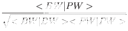

Next: 4.2 Memory requirements
Up: 4 Performances
Previous: 4 Performances
Contents
The following is a rough estimate of the complexity of a plain
scf calculation with pw.x, for NCPP. USPP and PAW
give raise additional terms to be calculated, that may add from a
few percent
up to 30-40% to execution time. For phonon calculations, each of the
3Nat modes requires a time of the same order of magnitude of
self-consistent calculation in the same system (possibly times a small multiple).
For cp.x, each time step takes something in the order of
Th + Torth + Tsub defined below.
The time required for the self-consistent solution at fixed ionic
positions, Tscf , is:
Tscf = NiterTiter + Tinit
where Niter = number of self-consistency iterations (niter),
Titer =
time for a single iteration, Tinit = initialization time
(usually much smaller than the first term).
The time required for a single self-consistency iteration Titer is:
Titer = NkTdiag + Trho + Tscf
where Nk = number of k-points, Tdiag = time per
Hamiltonian iterative diagonalization, Trho = time for charge density
calculation, Tscf = time for Hartree and XC potential
calculation.
The time for a Hamiltonian iterative diagonalization Tdiag is:
Tdiag = NhTh + Torth + Tsub
where Nh = number of Hψ products needed by iterative diagonalization,
Th = time per Hψ product, Torth = CPU time for
orthonormalization, Tsub = CPU time for subspace diagonalization.
The time Th required for a Hψ product is
Th = a1MN + a2MN1N2N3log(N1N2N3) + a3MPN.
The first term comes from the kinetic term and is usually much smaller
than the others. The second and third terms come respectively from local
and nonlocal potential.
a1, a2, a3 are prefactors (i.e.
small numbers
(1)), M = number of valence
bands (nbnd), N = number of PW (basis set dimension: npw),
N1, N2, N3 =
dimensions of the FFT grid for wavefunctions (nr1s, nr2s,
nr3s;
N1N2N3∼8N ),
P = number of pseudopotential projectors, summed on all atoms, on all values of the
angular momentum l, and
m = 1,..., 2l + 1.
The time Torth required by orthonormalization is
Torth = b1NMx2
and the time Tsub required by subspace diagonalization is
Tsub = b2Mx3
where b1 and b2 are prefactors, Mx = number of trial wavefunctions
(this will vary between M and 2÷4M, depending on the algorithm).
The time Trho for the calculation of charge density from wavefunctions is
Trho = c1MNr1Nr2Nr3log(Nr1Nr2Nr3) + c2MNr1Nr2Nr3 + Tus
where
c1, c2, c3 are prefactors,
Nr1, Nr2, Nr3 =
dimensions of the FFT grid for charge density (nr1,
nr2, nr3;
Nr1Nr2Nr3∼8Ng,
where Ng = number of G-vectors for the charge density,
ngm), and
Tus = time required by PAW/USPPs contribution (if any).
Note that for NCPPs the FFT grids for charge and
wavefunctions are the same.
The time Tscf for calculation of potential from charge density is
Tscf = d2Nr1Nr2Nr3 + d3Nr1Nr2Nr3log(Nr1Nr2Nr3)
where d1, d2 are prefactors.
For hybrid DFTs, the dominant term is by far the calculation of the
nonlocal (Vxψ) product, taking as much as
Texx = eNkNqM2N1N2N3log(N1N2N3)
where Nq is the number of points in the k + q grid, determined by
options nqx1,nqx2,nqx3, e is a prefactor.
The above estimates are for serial execution. In parallel execution,
each contribution may scale in a different manner with the number of processors (see below).
Next: 4.2 Memory requirements
Up: 4 Performances
Previous: 4 Performances
Contents